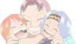
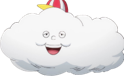

人际关系 |
简介 |
|  |
贝尔梅尔娜美的养母，娜美称她为“贝尔梅尔阿姨”。贝尔梅尔很欣赏娜美绘制地图的能力，支持她想画出世界地图的梦想 。贝尔梅尔娜美和诺琪高为亲生女儿，为了保护她们而被阿龙杀害。 |
诺琪高娜美的义姐，与娜美同为战地孤儿，被贝尔梅尔收养。诺琪高非常爱与理解娜美，支持她的行动和梦想，在娜美离开故乡后守护着贝尔梅尔的橘子园。 |
|
阿健可可亚西村的驻警，把娜美当自己的女儿般关心，同时娜美也视他如自己的父亲般。 |
|
|  |
宙斯原本是BIG MOM召唤的特殊霍米兹，由BIG MOM的自身灵魂构成。宙斯在灵魂即将被抽走时与魔法天候棒融为一体，成为了娜美的“搭档”。娜美给他起了个外号叫“棉花”。 |